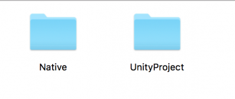
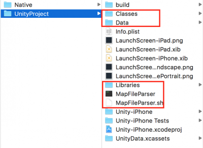
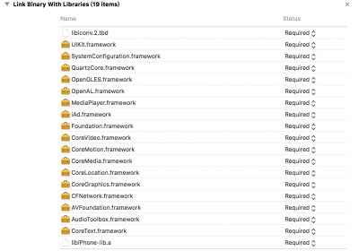
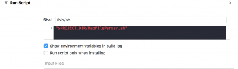
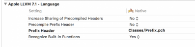
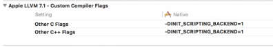
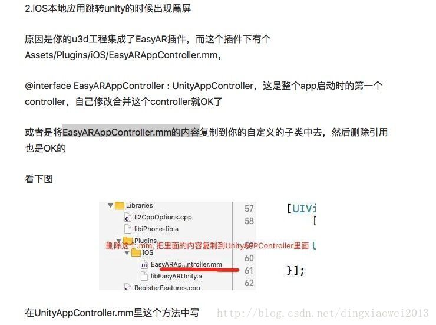

需求：
做一款社交类的APP，主体工程是原生开发，也就是是IOS的Xcode工程，产品经理为了丰富应用的玩法，就想往里面加上现在比较流行的AR功能，组成一款AR社交APP，我们之前见识多的都是工程是主体，然后IOS原生功能或者代码作为插件添加进Unity的Plugin里面，这样的方式参见文章(举例)：Unity和Android交互让手机动起来，相关IOS方面的文章也可以参见Mono的文章。但是作为AR社交我们肯定是以IOS的Xcode功能为主体，Unity的AR功能为宿主，因为毕竟还是属于社交APP。下面就进入正题，如何将Unity的功能模块添加整合进Xcode工程里面，直接上步骤。
介绍：Unity导出一个空的IOS项目，命名为UnityProject，原生应用命名为Native。

步骤：
一、拷贝文件
将UnityProject项目下 Classes Data Libraries MapFileParser MapFileParser.sh 等文件拷贝到Native主项根目录下

二、添加Framework

###三、添加配置
1.添加runscript

2.添加Search Paths
1 | Header Search Paths 添加 |
####3.添加预处理文件
Classes/Prefix.pch

####4.添加 -DINIT_SCRIPTING_BACKEND=1

###四、修改main.m
复制Classes/main.mm内容到main.m 修改main.m的扩展名为.mm
删除Unity生成main.mm
return UIApplicationMain(argc, argv, nil, NSStringFromClass([AppDelegate class]));
###五、修改 unityAppController
1 | inline UnityAppController* GetAppController() |
###六、修改 appdelegate
1 | - (BOOL)application:(UIApplication *)application didFinishLaunchingWithOptions:(NSDictionary *)launchOptions { |
###七、Error
####1、Expected identifier or ‘(‘
修改UnityViewControllerBaseiOS.h
1
2
3
4
5
6
7
8
9
10
11
12
13
14
15#ifdef __cplusplus
extern "C" {
#endif
void AddViewControllerRotationHandling(Class class_, IMP willRotateToInterfaceOrientation, IMP didRotateFromInterfaceOrientation, IMP viewWillTransitionToSize);
#ifdef __cplusplus
}
#endif
#ifdef __cplusplus
extern "C" {
#endif
void AddViewControllerDefaultRotationHandling(Class class_);
#ifdef __cplusplus
}
#endif
####2、如果存在多个pch配置文件，需要整合为一个
####3、Unity和Xcode版本会存在兼容问题，最好都升级到最新，否则会碰到莫名其妙的报错
###八、关于EasyAR的提示
如果使用EasyAR的话，会出现融合后黑屏的问题，解决如下
